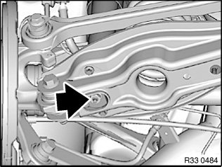
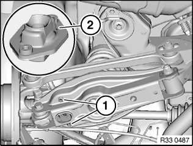
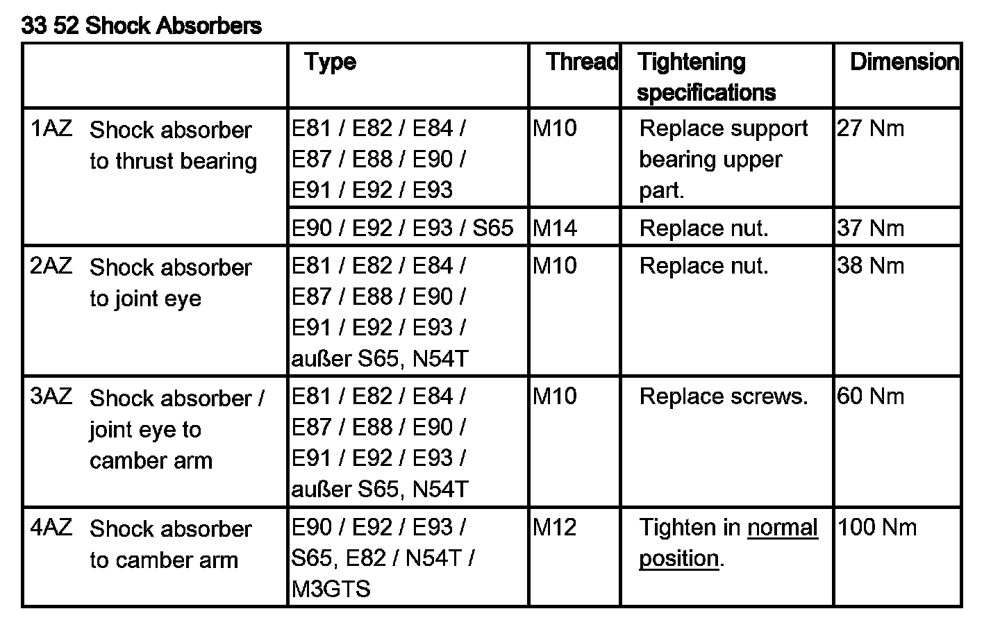

33 52 031 Replacing Rear Left or Right Rubber Mount For Shock Absorber Mounting
33 52 031 Replacing rear left or right rubber mount for shock absorber mountingWarning!
Risk of injury!
Car may tilt off lifting platform if the workshop jack is incorrectly handled.

Release nut; if necessary brace on hex head.
Tightening torque 33 52 2AZ.
Raise wheel carrier with workshop jack until shock absorber can be removed from rubber mount.
Installation:
Replace self-locking nut.

Release screws (1).
Tightening torque 33 52 3AZ.
Press shock absorber upwards and remove rubber mount (2) from camber arm.
